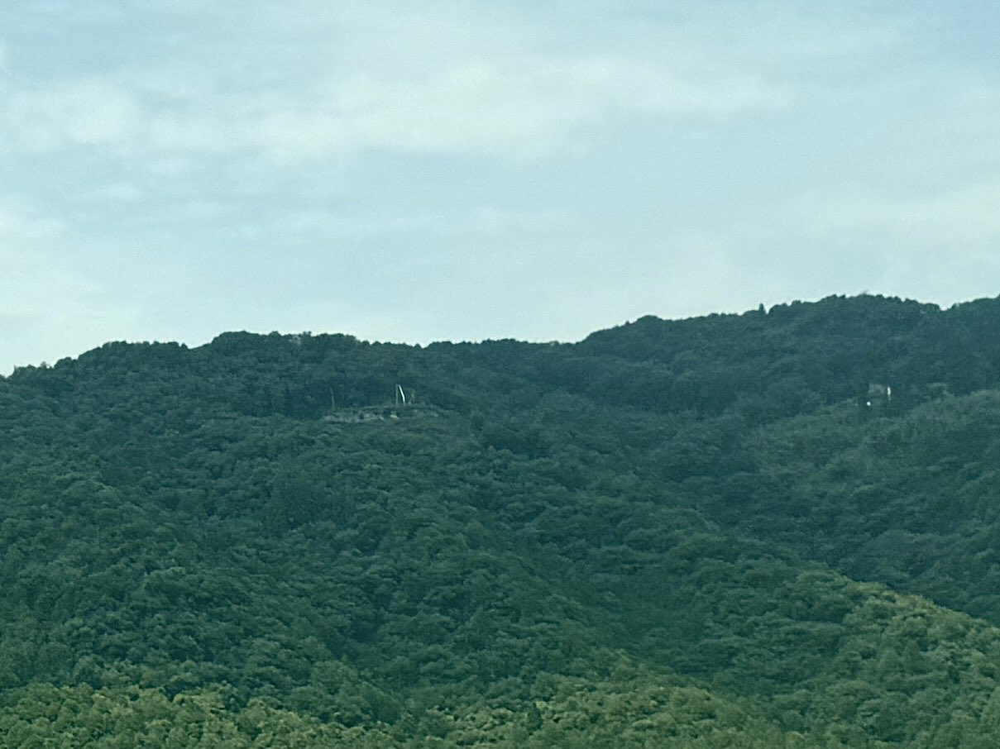

- Bereich
- Maibara → Kyoto
- Sitzseite
- Platz E · rechts Richtung Shin-Osaka; links Richtung Tokyo
- Zeitpunkt
- Etwa 120 Minuten nach der Abfahrt aus Tokio mit einem Nozomi
- Sichtdauer
- Wenige SekundenUngefähre Nozomi-Zeit; abhängig von Zuggeschwindigkeit, Wetter und Sichthindernissen.
DIE GESCHICHTE
Was ist Burg Kannonji und warum ist sie berühmt?
Burg Kannonji stand auf dem Berg Kinugasa (432 m) im heutigen Omihachiman, Präfektur Shiga. Ihre Ursprünge werden auf die Nanboku-cho- und Muromachi-Zeit zurückgeführt. Von da an entwickelte der Rokkaku-Clan – ein Zweig der Familie Sasaki, die wiederum von den Minamoto abstammte – sie zu seinem Hauptsitz. Bergrücken und Täler des gesamten Berges wurden mit Steinmauern befestigt und in zahllose Burgbezirke (Kuruwa) gegliedert. Damit war Kannonji eine der größten Bergburgen des mittelalterlichen Japan und der Sengoku-Zeit. Sie gehört zu den „100 bedeutenden Burgen Japans“ und teilt den Berg mit den Tempeln Kannonshoji und Kuwanomidera, was ihr auch eine religiöse Dimension verleiht.
Wenn Sie von Tokio nach Shin-Osaka reisen, schauen Sie beim Annähern an Maibara → Kyoto aus dem rechten Fenster (Platz E). In Richtung Tokio ist die Reihenfolge umgekehrt, und derselbe Platz E befindet sich links.
WAS SIE SEHEN
Nobunaga, Kannonji und Azuchi
Burg Kannonji ist vor allem für ihre Rolle bei Oda Nobunagas Vormarsch auf Kyoto bekannt. 1568 begleitete Nobunaga den künftigen Shogun Ashikaga Yoshiaki und verlangte die Kapitulation der Rokkaku im südlichen Omi. Sie weigerten sich. Seine Truppen nahmen daraufhin die untergeordnete Burg Mitsukuri an einem einzigen Tag ein. Erschüttert vom schnellen Angriff verließen Rokkaku Yoshikata und sein Sohn Yoshiharu Kannonji und flohen nach Koga. Die Herrschaft der Rokkaku über das südliche Omi endete praktisch ohne ernsthafte Verteidigung.
1576 begann Nobunaga den Bau von Burg Azuchi am Ufer des Biwa-Sees, direkt nordwestlich des Berges Kinugasa – ein Symbol der neuen Ära, die er schuf. Vom Zug aus enthält diese Landschaft zwei Kapitel Geschichte nebeneinander: die riesige Bergburg der alten Ordnung und die Burg einer neuen Zeit am See, die sie verdrängte. Zu wissen, dass „Burg Azuchi direkt hinter Kannonji liegt“, verändert den Blick aus dem Fenster.
Heute liegen Reste von Steinmauern und Burgbezirken entlang der Bergrücken verstreut. Kannonshoji am Bergfuß ist zu Fuß oder mit dem Taxi erreichbar. Die Stätte ist als nationale historische Stätte ausgewiesen; Erhaltung und archäologische Arbeiten dauern an.
AUF DER KARTE
Standort auf einen Blick
Karte öffnenZwischen der Sehenswürdigkeit und dem Aussichtspunkt im Shinkansen wechseln.
IHR GUIDE FÜR UNTERWEGS
Verpassen Sie nicht den Ausblick

Vor der Fahrt: Ausblicke planen
Wählen Sie Richtung, Bahnhof und Zug: So erfahren Sie, wann und auf welcher Seite Sie schauen sollten. Die Zeiten werden aus den planmäßigen Bahnhofshalten geschätzt.

Unterwegs: den nächsten Ausblick hören
GPS verfolgt Ihre Position. Der Audioguide sagt Ihnen, was als Nächstes kommt und auf welcher Seite.Weniger aufs Display, mehr aus dem Fenster schauen.
WEITERFÜHRENDE LEKTÜRE
Quellen
Offizielle Informationen und Aufzeichnungen von Ausblicken.